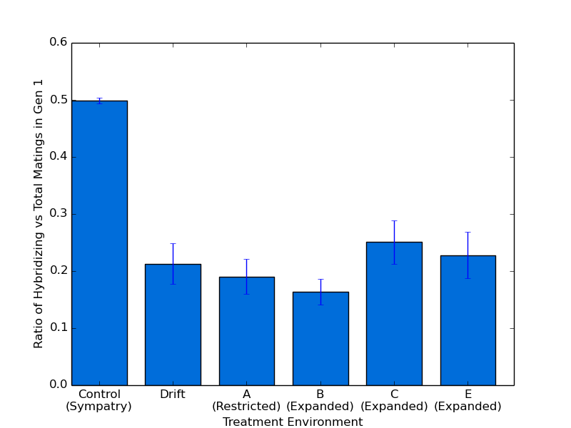

Doing a little thing to get an cleaned up figure for the proposal. Sent it on to Jason.
caninoko@dev-intel07:~/mate_discrimination/output/118b_ExperimentalPipeline_BetterSettings$ python ~/research_scripts/graph_generation/bar_chart_from_csv.py -x "Treatment Environment" -y "Ratio of Hybridizing vs Total Matings in Gen 1" --xticks="Control (Sympatry),Drift,A (Restricted),B (Expanded),C (Expanded),E (Expanded)" --error 118_ratio_sum_matings_gen1__pretty.png Ctrl_sum_matings_ratio_gen1.dat ScenD_sum_matings_ratio_gen1.dat ScenA_sum_matings_ratio_gen1.dat ScenB_sum_matings_ratio_gen1.dat ScenC_sum_matings_ratio_gen1.dat ScenE_sum_matings_ratio_gen1.dat
